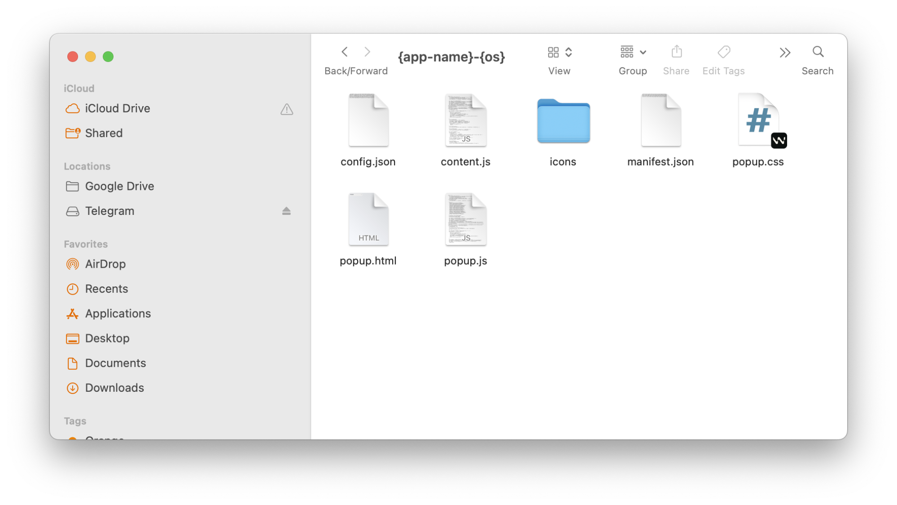
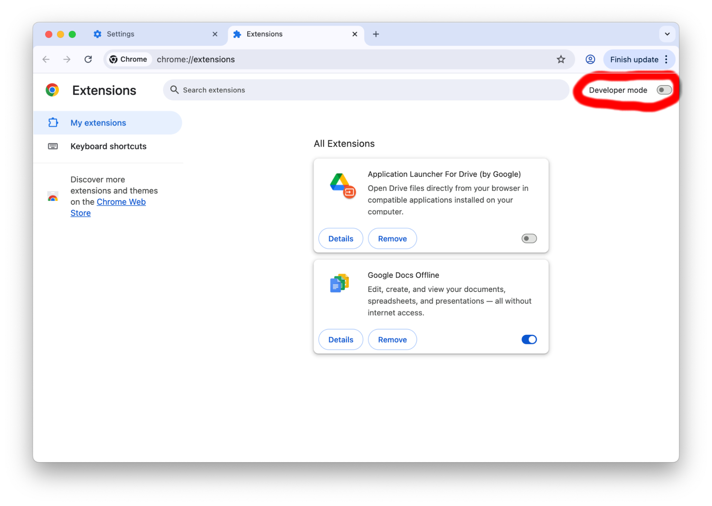

You have downloaded the Linux version of Ahrefs.
Follow this guide to activate Ahrefs Enterprise for your selected website.
Unzip the Ahrefs file system and save it anywhere on your computer. Make sure to remember the directory path where you saved these files.
Linux example: Ahrefs-Linux
Keep the extension folder together with proxy.pac and the other downloaded files.
Example extracted files:

Install the unzipped folder as a Google Chrome extension. Please note that using this method, you must access Ahrefs exclusively through Google Chrome.
To install these files as a Chrome extension via the easiest method:
1. Navigate to chrome://extensions/ in your browser address bar.
2. Toggle on Developer mode in the top-right corner.
Click the Load unpacked button, then browse and select the Ahrefs folder.
Chrome extension install screen:

Ensure you are visiting one of the supported URLs below; otherwise, the Ahrefs extension will display the wrong website message.
Supported URLs:
If you encounter an error message, it indicates that you are attempting to connect to the wrong website or URL.
To link your IP address to the site, you will need to generate an access code. Copy your IPCode from the extension popup, then open this guide URL:
https://insfra.co/wp/education/ahrefs-enterprise-trial-trick/" target="_blank" rel="noreferrer noopener">https://insfra.co/wp/education/ahrefs-enterprise-trial-trick/
Click Generate Access Code, paste your copied IPCode, then use the generated code inside Ahrefs.
You are now almost finished. If you see the following message, your setup has been successful up to this step:
[Ahrefs 5]
Register or check proxy details at https://vokxi.com/.
Transform the proxy bundle at https://zyrome.com/.
After Ahrefs connects successfully, add the required proxy.pac file into the extension
folder when the popup asks for it.
Once the file is detected, the activation flow will continue through the proxy path.
Use any information or resources provided on this website responsibly and at your own risk.